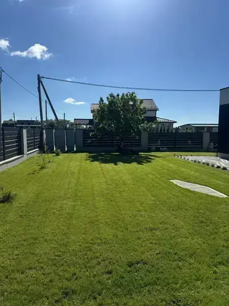

Покос травы в Минске
Профессиональный покос травы на участках любой площади в Минске. Регулярный и разовый уход за газоном с подбором высоты среза под тип травы.
- Аккуратный срез без повреждения газона
- Уборка травы включена в услугу
Приезжаем на участок, смотрим своими глазами и называем реальную цену. Работаем по Минску и области — регулярно или разово, как вам удобно.
Роторные косилки, скарификаторы, мойки высокого давления — берём технику под задачу, не наоборот.
Выезжаем в черту города и за МКАД. Дзержинский, Минский, Пуховичский районы — уточняйте при звонке.
Каждый в команде прошёл не один сезон. Знают, чем молодой газон отличается от запущенного, и работают соответственно.
Если что-то пошло не так — приедем разобраться. Без лишних вопросов и повторной оплаты за выезд.
Покос раз в две недели или полный сезонный уход — выбирайте нужное, остальное подскажем при выезде.

Настройка, ремонт и сезонное обслуживание систем автополива в Минске. Запуск, консервация и устранение протечек.
Цены актуальны для Минска и Минской области.
Выезд
специалиста для замеров — бесплатно.
| Услуга | Стоимость |
|---|---|
| Газон | |
|
Газон
Уход за газоном
Популярно
Покос, уборка скошенной травы, подравнивание краёв
|
от
15
BYN
за м²
|
|
Газон
Скарификация газона
Удаление войлока, аэрация, улучшение состояния почвы
|
от25
BYN
за м²
|
| Растения | |
|
Растения
Стрижка и формовка туй
Фигурная обрезка, формирование кроны, уборка стрижки
|
от
12
BYN
за единицу
|
|
Растения
Защита растений
Обработка от болезней и вредителей, профилактическое
опрыскивание
|
от80
BYN
за выезд
|
|
Растения
Валка деревьев и кустарников
Спил, вывоз, дробление пней — по договорённости
|
от50
BYN
за единицу
|
| Полив и уборка | |
|
Полив
Обслуживание автополива
Настройка, запуск, консервация, ремонт систем
|
от120
BYN
за выезд
|
|
Уборка
Мойка дорожек
Аппаратная мойка брусчатки, плитки, бетонных покрытий
|
от8
BYN
за м²
|
| Ландшафт | |
|
Ландшафт
Устройство газона и благоустройство
Планировка, завоз грунта, посев, укладка рулонного газона
|
от35
BYN
за м²
|
|
Под ключ
Комплексный уход «Под ключ»
Выгодно
Весь сезон: покос, скарификация, стрижка, полив, защита
|
от290
BYN
в месяц
|
Более 50 реализованных проектов в Минске и области — реальные фото до/после
Большинство заказчиков возвращаются следующей весной — и это честнее любой рекламы.
"Работаем с ребятами третий сезон. Скарификацию делали в мае — через три недели газон было не узнать. Приезжают вовремя, лишних денег не просят, всё убирают за собой."
"Три туи у забора стригли впервые — боялась, что испортят. Получилось аккуратно, форма держится до сих пор. Заодно настроили автополив, который не работал по года. Приятно удивлена!"
Никаких сюрпризов: рассказываем заранее, что и когда будет сделано.
Рассказываете о задаче: разовый покос, настройка автополива или обслуживание на весь сезон. Это займёт пару минут.
Специалист осматривает участок, делает замеры и называет точную стоимость. Бесплатно, без обязательств.
Приезжаем в согласованный день, делаем всё чисто и аккуратно. Мусор и скошенное убираем сами.
Отвечаем на самые популярные вопросы об уходе за газоном и нашем сервисе.
Стоимость покоса зависит от площади участка и периодичности выездов. Позвоните по номеру +375 (29) 855-32-19 или оставьте заявку — рассчитаем стоимость после осмотра.
Лучше всего — в апреле или начале мая, когда почва уже подсохла. Убираем войлок и мох, открываем корням доступ к воздуху. Результат виден через 2–3 недели.
Да, выезжаем в радиусе 50 км от Минска: Минский, Дзержинский, Пуховичский и соседние районы.
Обычно 1–2 раза за сезон: основная стрижка в мае–июне, корректирующая — при необходимости осенью. Подберём график под ваши растения.
Позвоните +375 (29) 855-32-19 или оставьте заявку . Согласуем удобное время и приедем на осмотр.
Оставьте заявку, приедем на осмотр и назовём точную стоимость. Никаких обязательств до подписания договора.
Оставить заявкуОпишите задачу — перезвоним в течение дня, уточним детали и скажем цену. Без скриптов и навязывания.

{kind=link}
{kind=link}
{kind=link}
{kind=link}
{kind=link}
{kind=link}
{kind=link}
{kind=link}
{kind=link}
{kind=link}
{kind=link}
{kind=link}
{kind=link}
{kind=link}
{kind=link}
{kind=link}
{kind=link}